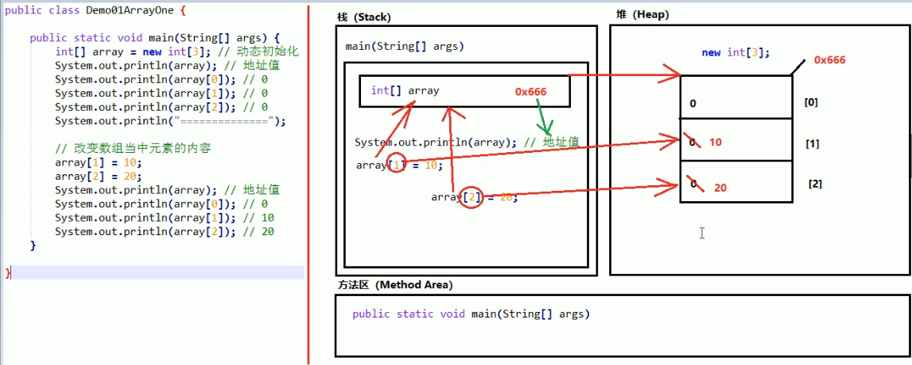

数组概念
是一种容器，能够存放多个数据值
特点
多个数据值类型必须统一
是一种引用数据类型
程序运行时，数组长度不可改变
数组初始化
动态初始化格式
数据类型[] 数组名称 = new 数据类型[数组长度]
静态初始化格式
数据类型[] 数组名称 = new 数据类型[]{元素1，元素2，...}
省略初始化格式：
数据类型[] 数组名称 = {元素}
Java虚拟机内存分化
1.栈（Stack）
存放的都是方法中的局部变量，方法的运行一定是在栈中
局部变量：方法的参数，或是方法{}中的内部变量
作用域：一旦超出作用域，立刻从栈中消失
2.堆（Heap）
凡是new出来的东西，都存放在堆中
堆内存里面的东西都有一个地址值：16进制
堆里面的数据都有默认值
整型 0
浮点型 0.0
字符型 \u0000
布尔型 false
引用型 null
3.方法区（Method Area）
存储.class相关信息，包含方法的信息
4.本地方法栈（Native Method Stack）
与操作系统相关
5.寄存器（pc Register）
与CPU相关
一个数组内存图

两个数组内存图
两个变量指向一个数组
获取数组长度
数组名称.length
数组越界异常
访问数组元素时，索引编号并不存在。ArrayIndexOutOfBoundException.
空指针异常
数组必须进行new初始化才能使用其中的元素，如果只是赋值了一个null,没有进行new的初始化，就会报空指针异常
数组遍历
for(int i = 0;i < array.length;i++){
System.out.println(array[i]);
}
数组获取最大值元素
int[] array = new int[]{1, 2, 15, 30, 40, 50, 6};
int max_num = array[0];
for (int i = 1; i < array.length; i++) {
if (array[i] > max_num) {
max_num = array[i];
}
}
System.out.println(max_num);
数组反转
int[] array = {10, 20, 30, 40, 50};
for (int min = 0,max = array.length - 1;min < max;min++,max--){
int temp = array[min];
array[min] =array[max];
array[max] = temp;
}
for (int i = 0; i < array.length; i++) {
System.out.println(array[i]);
}
数组可以作为方法的参数
向方法传递的是数组的地址值
方法想返回多个返回值，可使用数组作为返回值类型即可